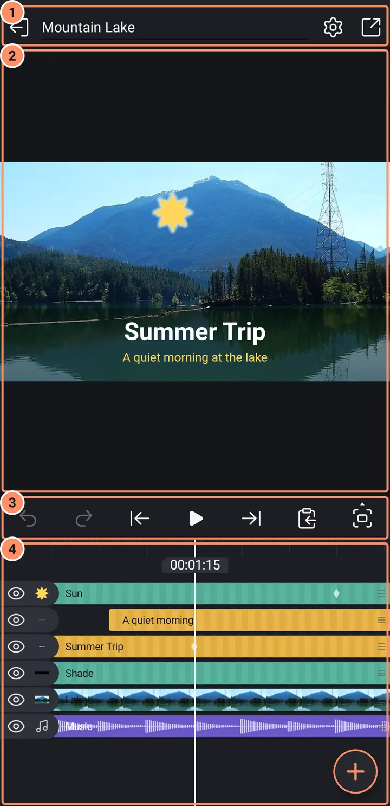
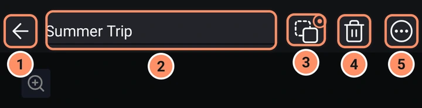
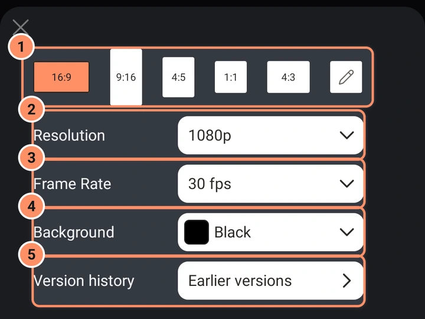
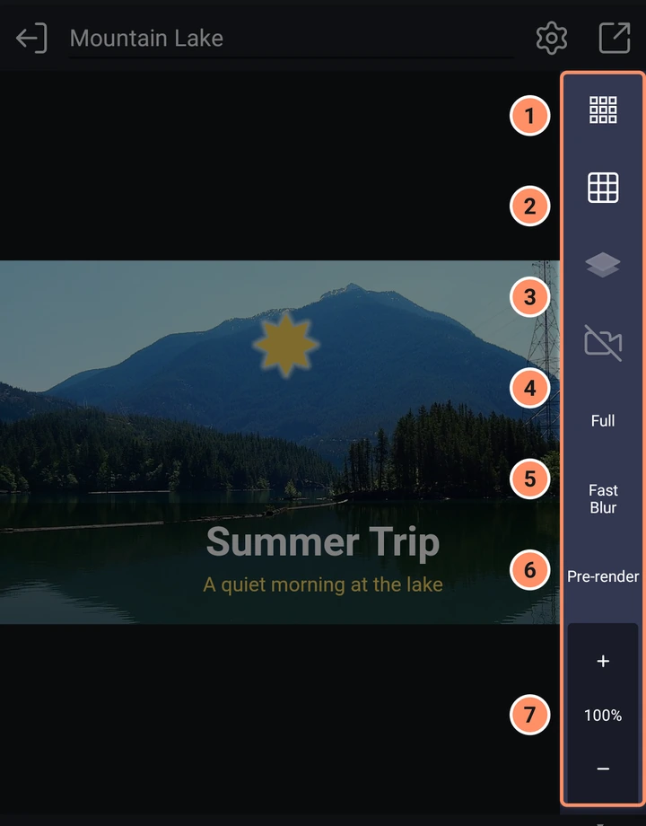
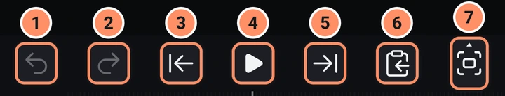

Het editorscherm
De bovenbalk, het voorbeeld, de afspeelbalk en hoe alles samenwerkt.
De editor bestaat uit vier delen, van boven naar beneden: de bovenbalk, het voorbeeld, de afspeelbalk en de tijdlijn met de tools. Tablets hebben een eigen indeling: zie Op een tablet hieronder.

Wijzigingen worden kort na elke bewerking automatisch opgeslagen. Tijdens het bewerken wordt ook elke twee minuten een versie van het project bewaard (zie Projecten, back-up en importeren). De bovenste laag in de tijdlijn is de voorste laag, en nieuwe lagen komen vooraan.
De terugknop van de telefoon gaat steeds één stap terug: hij sluit de voorbeeldstrook, heft een meervoudige selectie op, sluit de easinggrafiek, verlaat een geopend effect, verlaat een paneel, deselecteert de laag, verlaat een geopende groep, en pas daarna de editor.
De bovenbalk
Wat de bovenbalk toont, hangt af van wat er is geselecteerd.
Niets geselecteerd
- Naar projectlijst, links.
- De projectnaam. Tik erop om het project een andere naam te geven.
- Projectinstellingen (het tandwiel): zie hieronder.
- Exporteren en delen (het deelicoon): opent het scherm Exporteren.
Een laag geselecteerd
- Terug deselecteert de laag.
- De laagnaam. Tik erop om de naam te wijzigen; dit is ook het label op de balk in de tijdlijn.
- De knop bovenliggende laag (een gestippeld vierkant, een dicht vierkant en een rondje). Die toont "Geen" en elke andere laag. Kies je er een, dan wordt die laag de bovenliggende laag: de geselecteerde laag volgt hem dan als hij beweegt, draait of schaalt, en blijft op zijn plek op het scherm als je hem instelt.
- Laag verwijderen (de prullenbak) verwijdert meteen, zonder te vragen. Met Ongedaan maken komt hij terug. Onderliggende lagen worden losgekoppeld.
- Laagmenu (drie puntjes): zie Laagmenu's en meerdere lagen selecteren.

Een paneel geopend. De bovenbalk toont een terugpijl en de naam van het paneel, zoals Transformeren, Vulling en kleur of Effecten.
In een groep. Na Groep bewerken toont de bovenbalk het pad in plaats van de projectnaam: de projectnaam en daarna de naam van elke geopende groep. Tik op de projectnaam om terug te gaan naar het hele project, of op de naam van een groep om naar die groep terug te gaan. Is er een laag geselecteerd, dan verlaat je de groep met een klein label met de groepsnaam naast de laagnaam. In een groep is het tandwiel verborgen. Zie Vormen, tekenen en maskers.
Projectinstellingen
Het tandwiel opent een venster met dezelfde opties als het venster voor een nieuw project: de vorm (16:9, 9:16, 4:5, 1:1, 4:3 of een eigen verhouding), Resolutie, Framesnelheid en Achtergrond. Wijzigingen hier veranderen alleen het canvas; je lagen worden niet herschaald. Je kunt de wijziging ongedaan maken. De rij Versiegeschiedenis heeft een knop Eerdere versies.

Bij een assetproject heeft het venster ook Voorcomponeren en Timing aanpassen: zie Assets, sjablonen en voorinstellingen.
Het voorbeeld
Het voorbeeld toont het canvas. Een transparante achtergrond zie je als een dambordpatroon.
- Selecteren. Tik op een laag om hem te selecteren (de bovenste laag onder je vinger). Tik op een leeg stuk canvas om de selectie op te heffen.
- Verplaatsen. Sleep ergens op het voorbeeld om de geselecteerde laag te verplaatsen, dus niet alleen op de laag zelf.
- Schalen. De geselecteerde laag heeft een witte rand met acht ronde grepen. Sleep aan een hoek om de laag gelijkmatig te schalen; sleep aan een zijkant om hem in die richting uit te rekken. Knijpen met twee vingers schaalt ook. De grepen schalen rond het draaipunt (in Transformeren dubbeltik je op Verplaatsen; op een computer is het het tabblad Draaipunt), dat op zijn plek blijft.
- Draaien. Er is geen draaigreep en gewone lagen kun je niet met twee vingers draaien. Gebruik Transformeren, Draaien (zie Laagtools).
- Cameralagen. Slepen verschuift de camera en knijpen verandert de kijkhoek.
- Tekst. In de teksteditor verander je met de greep aan de zijkant van het tekstkader de terugloopbreedte.
- Hulplijnen. Terwijl je een laag verplaatst in Transformeren, verschijnen er dunne rode lijnen als hij uitlijnt met het midden van het canvas of met een andere laag.
Het canvas zoomen en verschuiven
Is er niets geselecteerd, dan verschuif en zoom je het canvas met twee vingers (van 1 % tot 6400 %). Is er een laag geselecteerd, tik dan op het kleine vergrootglas linksboven in het voorbeeld om de modus voor verschuiven en zoomen aan te zetten. Twee vingers zoomen dan het canvas, terwijl één vinger nog steeds de laag verplaatst. Dubbeltik met twee vingers om terug te gaan naar 100 %, en nog eens om terug te gaan naar de vorige weergave. Zoomen werkt ook terwijl je een tekstvak bewerkt, zodat je kunt uitzoomen om een lang vak uit te rekken.
De voorbeeldstrook
De laatste knop van de afspeelbalk (Voorbeeldmodus) opent een smalle strook aan de rechterrand van het voorbeeld, met deze knoppen van boven naar beneden.
- Pixelvoorbeeld toont scherpe projectpixels, handig als je ingezoomd bent.
- Raster legt om de 40 projectpixels een raster over het beeld.
- Geselecteerde lagen solo verbergt alle andere lagen. Tik nog eens om de andere lagen op halve dekking te tonen, en een derde keer om het uit te zetten.
- Cameraweergave kijkt door de cameralaag (beschikbaar als het project er een heeft).
- Volledig, Half of Kwart: de kwaliteit van het voorbeeld. Lager is sneller op een trage telefoon en verandert je export niet. Het is dezelfde instelling als Voorbeeldkwaliteit in Instellingen.
- Snelle vervaging of Volledige vervaging: hoe de effecten voor bewegingsonscherpte in het voorbeeld worden getoond. Snel is een benadering; Volledig is nauwkeurig en trager. Exports zijn altijd nauwkeurig.
- Zoom: plus- en minknoppen en het huidige percentage.

Vooraf renderen, tussen Snelle vervaging en Zoom, rendert het project alvast vanaf de afspeelkop tot het einde (of zoveel als in het geheugen en de opslag past), zodat een zwaar project vloeiend afspeelt. Een melding bovenin het voorbeeld toont de voortgang, met een knop Annuleren. Zolang het afspelen de vooraf gerenderde frames gebruikt, staat er rechtsboven in het voorbeeld een klein label Vooraf gerenderd. Elke wijziging in het project maakt de vooraf gerenderde versie verouderd: de knop Vooraf renderen in de strook verandert van kleur en een melding biedt Opnieuw vooraf renderen aan. Is het klaar, tik dan op Vooraf renderen om te zien welke tijd het beslaat, of houd de knop ingedrukt om het te verwijderen. Ook zonder Vooraf renderen bereidt de app frames rond de afspeelkop voor zodra je pauzeert (zie Instellingen); een dunne groene lijn onder aan de tijdliniaal markeert ze.
Meer op het voorbeeld
- De ronde knop Animeren rechtsonder verschijnt als er een zichtbare laag is geselecteerd: die opent In-, Uit- en Lus-animaties. Zie Overgangen en animaties.
- De melding Ongedaan gemaakt/Opnieuw gedaan onderaan laat zien wat de laatste stap ongedaan maken of opnieuw deed. Tik erop (klik op een computer) om naar de wijziging te gaan: de laag wordt geselecteerd, de afspeelkop gaat erin staan en het paneel van die wijziging opent, zoals de instellingen van het effect. Bestaat de laag of het effect niet meer, dan sluit de melding gewoon. Veeg de melding omlaag om hem te verbergen.
De afspeelbalk
Zeven knoppen, van links naar rechts.
- Ongedaan maken en 2. Opnieuw. De app onthoudt tot 200 stappen. Een hele sleepbeweging of schuifregelaarbeweging telt als één stap. Bij elke stap ongedaan maken of opnieuw zie je een korte melding zoals "Ongedaan gemaakt: Verplaatsen". Bij een wijziging aan een effect staat de naam van het effect erbij, zoals "Ongedaan gemaakt: Blur toevoegen".
- Terugspringen en 5. Vooruitspringen springen naar het vorige of volgende stoppunt. Is er niets geselecteerd, dan zijn dat het begin en het einde van het project; is er een laag geselecteerd, dan zijn het het begin, het einde en de keyframes van die laag. Bladwijzers zijn altijd stoppunten.
- Afspelen / Pauzeren. Houd Afspelen ingedrukt terwijl het afspelen stilstaat om herhalen aan of uit te zetten. Speel je af vanaf het einde, dan begint het weer bij het begin.
- Kopiëren en plakken opent een menu om te dupliceren, kopiëren, plakken en voorinstellingen op te slaan: zie Laagmenu's en meerdere lagen selecteren.
- Voorbeeldmodus opent de voorbeeldstrook.

De dunne lijn onder de balk is tijdens het afspelen een live niveaumeter: de linkerhelft toont het linkerkanaal en de rechterhelft het rechterkanaal, groen, dan geel, dan rood naarmate het geluid harder wordt. Een helft knippert rood als die kant oversteurt.
Meervoudige selectie
Houd het oog of het naamgedeelte van de rij van een laag ingedrukt en schuif omhoog of omlaag om meerdere rijen tegelijk te selecteren. Daarna selecteer of deselecteer je rijen met een tik. De bovenbalk verandert van kleur en toont knoppen voor groeperen, effecten, verwijderen en uitlijnen, en onderaan verschijnt een balk met opdrachten voor de timing van clips. Ze worden allemaal beschreven in Laagmenu's en meerdere lagen selecteren.
Op een tablet
Een tablet gebruikt een bredere indeling zodra het scherm breed genoeg is, staand en liggend (de meeste tablets van 10 en 11 inch in beide standen, kleinere als je ze liggend houdt).
- De panelen en de tools van een geselecteerde laag openen in een kolom naast het voorbeeld, zodat ze nooit de tijdlijn bedekken.
- De tijdlijn krijgt de hele breedte onder het voorbeeld. In staande stand neemt hij het onderste deel van het scherm in, zodat er veel meer lagen op passen.
- De tools passen op één pagina, in twee tot vier kolommen.
Op een kleinere tablet in staande stand ziet de editor eruit als die van de telefoon, en vensters zoals de kleurkiezer, voorinstellingen, Over en Help openen als een kaart in het midden in plaats van het hele scherm te vullen. Het startscherm krijgt ook een raster met projecten en sjablonen en zet de tools naast elkaar: zie Het startscherm.